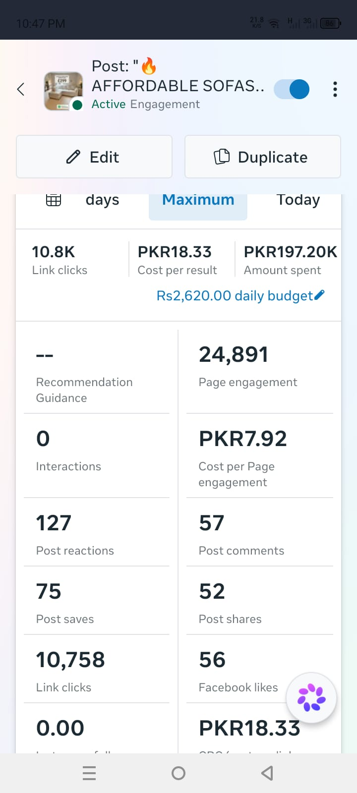
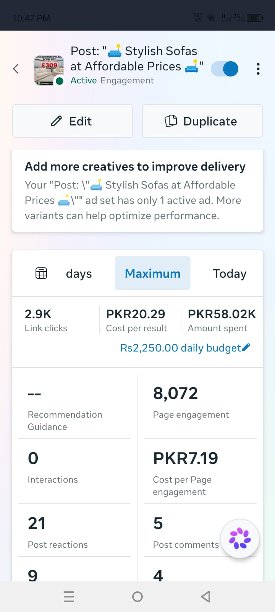

0101 — 04
⌁
SEO
Building search visibility through research, technical checks, on-page optimization and content strategy.
- Keyword Research
- Technical & On-Page SEO
- SEO Audits
- Competitor Analysis
Digital Marketing & SEO professional focused on SEO, Meta Ads, analytics and market research — backed by a Computer Science foundation.
I’m a BS Computer Science student in my 7th semester building a career at the intersection of technology, marketing and data.
My practical work spans SEO, Meta Ads, competitor research, website optimization and WordPress. I enjoy breaking a business problem into research, strategy, execution and measurable insights.
My technical background gives me a structured approach to websites, data and digital systems, while my marketing work keeps the focus on customers, acquisition and business outcomes.
Core capabilities I’m developing through practical projects and hands-on digital marketing work.
Building search visibility through research, technical checks, on-page optimization and content strategy.
Planning paid social campaigns around audiences, creatives, testing and performance optimization.
Turning marketing metrics into observations, insights and practical recommendations.
Combining competitor intelligence, market research and website thinking to support marketing decisions.
Campaign planning focused on audience research, campaign structure, creative testing, funnel thinking and performance analysis.
Independent audit framework covering technical SEO, keyword targeting, on-page elements, speed, structure and competitor opportunities.
Independent analysis of competitor positioning, website structures, SEO opportunities, customer journey and digital acquisition.
Personal digital agency project focused on brand development, website architecture, content organization and SEO considerations.
Selected Meta Ads campaign screenshots from my practical paid-social work. Metrics below are transcribed from the campaign dashboard screenshots and are presented as campaign evidence, not as guaranteed future performance.


Understand the market, audience, competitors and business objective.
Turn research into a focused channel, content or acquisition strategy.
Build campaigns, optimize pages, create content and test assumptions.
Review performance, identify patterns and turn findings into next actions.
Formal digital marketing exposure alongside independent practical projects in SEO, paid media, websites and research.
View Certificate ↗Open to junior and associate-level opportunities across digital marketing, SEO and paid media.
Download My Resume ↓For roles, internships, digital marketing projects or professional collaboration, reach out through the links below.